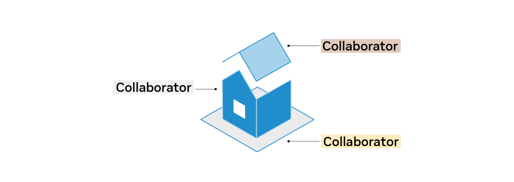
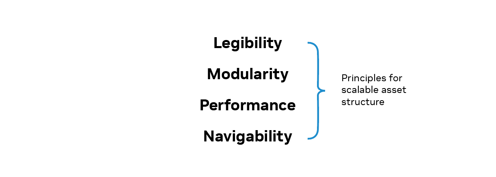
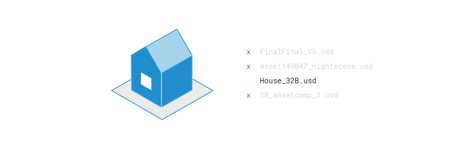
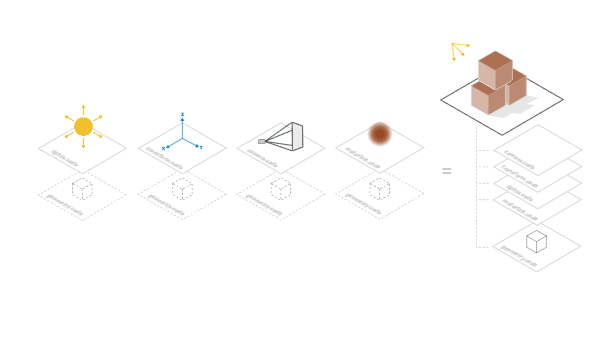

Why Is an Asset Structure Necessary?#
What Is an Asset?#
An asset is a named, versioned, and structured container of one or more resources which may include composable OpenUSD layers, textures, volumetric data, and more. You’ll often come across terms like “asset”, “model”, “assembly”, “element”, “component”, “set”, “shot”, “file”, and “package” when discussing the organization of production data, a product, or a digital twin.
Asset structure facilitates reuse of this persistent data.
What Makes Asset Structure Necessary?#
Asset structure plays an important role in scaling pipelines and ecosystems. Here’s why:
Content flow. Asset structures help map out the journey of content throughout production, ensuring everything runs smoothly.
Seamless collaboration. By adopting consistent conventions and patterns, asset structures reduce friction and make it easier for teams to communicate and work together.
No one-size-fits-all solution. There isn’t a universally best way to structure an OpenUSD asset, as usage and domains vary. A well-designed asset structure promotes scalability by encouraging parallel and modular workflows, minimizing complexity, and striking a balance between openness and resilience to change.

A well-designed, scalable asset structure should always be tailored to the needs of your clients and collaborators.
If OpenUSD is an intermediate stage in generating your final deliverable, like an image or video, you’ll generally have more flexibility with your structure. However, if the asset itself is the deliverable or part of an interactive experience, both the client’s stated and their anticipated needs will heavily influence the structure.
Collaboration is core in OpenUSD. To accommodate the size, scale, and organization of various teams, a scalable asset structure should enable parallel workstreams across multiple dimensions.
The Four Principles of Scalable Asset Structure#

There are four key principles that contribute toward a scalable asset structure:
Legibility ensures your asset structure is easy to understand and interpret.
Modularity allows for flexibility and reusability.
Performance ensures your asset structure is efficient and optimized.
Navigability makes it easy for users to find and access the features and properties they need.
By adhering to these principles, you can create an asset structure that is not only scalable but also efficient and user-friendly. Let’s dive into each principle to understand more.
Legibility#

A legible asset structure should be easy to understand and help new users get up to speed quickly. To ensure your asset structure is legible, consider the following: Do names effectively convey the intent and type of your asset?
Names for prims, properties, and resources should clearly represent their purpose and nature. Since names often appear in queries, logs, arguments and warnings, their clarity can aid in troubleshooting and communication even before opening a USD stage.
Legibility can vary by domain. Sometimes, a simple visual description (e.g., LargeCardboardBox) is best, while in other contexts, explicit product codes (e.g., ID_2024_5678) might be more readable.
Here are a few other tips when creating a legible asset structure:
Use naming conventions that work seamlessly in database queries, file paths, resource identifiers, and command line arguments.
Opt for straightforward standards like ASCII or UTF-8 identifiers.
Steer clear of overusing composition arcs and features that cause conceptual overload and complicate user understanding.
Choose naming conventions that convey importance and intent to downstream users. For example, capitalized prim names can signify “public” elements, while underscored prim names denote “internal” ones.
Modularity#

The next key principle to a scalable asset structure is modularity. Ask yourself: Does your asset structure facilitate iterative improvement of reusable content?
Reusing assets saves users time and allows for shared storage and resources in distributed computing environments. A modular structure encourages iterative improvement and reuse of assets, and enables parallel workstreams and collaboration through the use of layer stacks.
When building modular assets, you’ll want to:
Define clear entry points and establish stable interfaces to interact with your assets.
Encapsulate local dependencies with anchored paths to manage local dependencies effectively.
Keep instances within a specific version and leverage linking, liaising, and deduplication features of your storage and asset resolver to make assets atomic.
Performance#
An unoptimized asset will load more slowly than a performant one.
When discussing performance, we’re essentially asking: Does the structure accelerate content read and write speeds for users and processes?
A performant asset structure can mean different things:
Interactive Performance: How quickly an individual user can work with an asset.
Setup Speed: How fast a new asset (like a film sequence or robot training scenario) can be set up.
Deployment Speed: How swiftly a change can be robustly deployed across various contexts.
The speed of reading an asset is driven by the cost of resolving, opening and composing the set of USD layers in a stage. You can use reference/payload pairs to create boundaries between an asset’s lightweight entry point interface and the more complex prim hierarchies and properties.
Here are some additional tips to consider:
Crate (.usdc) files are generally I/O efficient across network and file systems. However, a mirroring asset resolver that localizes a layer before reading can undermine these optimizations.
Use variants, references and payloads to avoid synchronization issues.
Avoid using timestamps, UUIDs, and versions to layers that might complicate storage deduplication.
Use instancing to keep the composed prim count manageable for clients (e.g., avoid millions of prims).
In order to determine if your asset is performant or not, you’ll need to define measurable performance metrics based on the needs of your clients and collaborators.